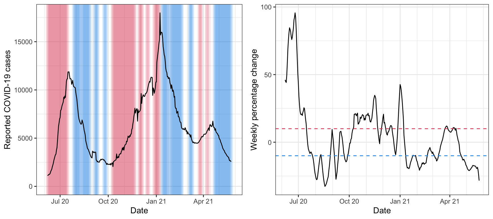

A basic way of assessing growth in a signal is to look at its percentage change over two neighboring time windows. We investigate this in the current vignette, using the pct_change() convenience function from the epiprocess package, inside of a call to epi_slide(). As before, we’ll look at state-level daily reported COVID-19 cases, smoothed using a 7-day trailing average.
library(covidcast) library(epiprocess) library(dplyr) x <- covidcast_signal(data_source = "jhu-csse", signal = "confirmed_incidence_num", start_day = "2020-06-01", end_day = "2021-05-31", geo_type = "state", geo_values = "fl") %>% as.epi_df() %>% rename(cases = value) %>% select(geo_value, time_value, cases) %>% epi_slide(cases = mean(cases), n = 7)
The pct_change() function is a simple convenience function that takes a single argument var, the variable whose percentage change is to be computed. If var has length N, which is assumed to be even, and A and B denote the sum of the first N/2 and last N/2 values in var, respectively, then pct_change(var) returns 100 * (B / A - 1). (If the length of var is odd, then its first value is ignored, for the sake of the computation.)
Used in call to epi_slide(), we can fluidly compute percentage change values in a variable over time:
x <- epi_slide(x, pct_change = pct_change(cases), n = 14, align = "center", complete = TRUE) head(x, 21) %>% print(n = Inf)
## # A tibble: 21 × 4
## geo_value time_value cases pct_change
## <chr> <date> <dbl> <dbl>
## 1 fl 2020-06-01 667 NA
## 2 fl 2020-06-02 642 NA
## 3 fl 2020-06-03 867 NA
## 4 fl 2020-06-04 1005 NA
## 5 fl 2020-06-05 1065 NA
## 6 fl 2020-06-06 1099. NA
## 7 fl 2020-06-07 1111. 46.1
## 8 fl 2020-06-08 1153. 44.8
## 9 fl 2020-06-09 1222. 44.2
## 10 fl 2020-06-10 1230. 49.8
## 11 fl 2020-06-11 1269. 58.9
## 12 fl 2020-06-12 1355. 69.2
## 13 fl 2020-06-13 1542 75.9
## 14 fl 2020-06-14 1661. 81.0
## 15 fl 2020-06-15 1775. 84.7
## 16 fl 2020-06-16 2016. 83.4
## 17 fl 2020-06-17 2193. 81.7
## 18 fl 2020-06-18 2408. 78.1
## 19 fl 2020-06-19 2682. 76.0
## 20 fl 2020-06-20 2892. 77.7
## 21 fl 2020-06-21 3103. 81.1Note the use of align = "center", which centers the running window around the reference time point (as opposed to the default, align = "right"). Thus to be clear, the pct_change value computed on (for example) June 7 is the percentage change between the sum of cases from June 1 to 7, and the sum from June 8 to June 14. This can be seen as an estimate of the weekly growth rate on June 7. Furthermore, the argument complete = TRUE in the call to epi_slide() specifies that a complete window of n = 14 time points must be available for the computation, which is why the the percentage change values for the first 6 time points (from June 1 to June 6) are NA.
Next we plot these values alongside the signal itself. We highlight the periods in time for which the percentage change is above 10% (in red) and below -10% (in blue).
library(ggplot2) theme_set(theme_bw()) threshold_upper = 10 threshold_lower = -10 p1 <- ggplot(x, aes(x = time_value, y = cases)) + geom_tile(data = x %>% filter(pct_change >= threshold_upper), aes(x = time_value, y = 0, width = 7, height = Inf), fill = 2, alpha = 0.1) + geom_tile(data = x %>% filter(pct_change <= threshold_lower), aes(x = time_value, y = 0, width = 7, height = Inf), fill = 4, alpha = 0.1) + geom_line() + scale_x_date(minor_breaks = "month", date_labels = "%b %y") + labs(x = "Date", y = "Reported COVID-19 cases") p2 <- ggplot(x, aes(x = time_value, y = pct_change)) + geom_line() + geom_hline(yintercept = threshold_upper, linetype = 2, col = 2) + geom_hline(yintercept = threshold_lower, linetype = 2, col = 4) + scale_x_date(minor_breaks = "month", date_labels = "%b %y") + labs(x = "Date", y = "Weekly percentage change") gridExtra::grid.arrange(p1, p2, nrow = 1)
